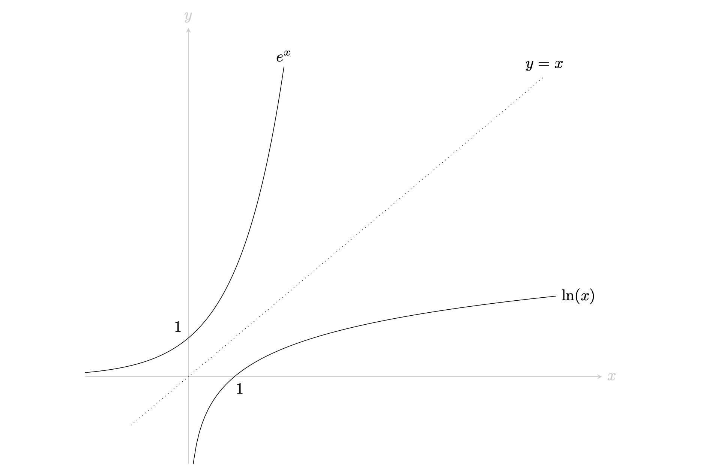

Introduction to logarithms
Before reading this guide, it is recommended that you read Guide: Laws of indices.
What are logarithms?
In the same way that subtraction ‘undoes’ addition, and division ‘undoes’ multiplication, you can think of the logarithm as the function that ‘undoes’ exponentiation. Logarithms are useful because they essentially let you work backwards through a calculation by undoing exponential effects. Furthermore, logarithms allow you to express large numbers in a convenient way, as well as model various phenomena as they occur in a logarithmic fashion. An example would be a hot object cooling down; this cools down logarithmically.
In this guide, you will learn the definition of a logarithm, the laws concerning logarithms, what the natural logarithm is and finally, how to change the base of a logarithm.
In its simplest form, a logarithm answers ‘How many of one number multiply together to make another number?’. This is what motivates the following definition:
If \[ a^x = b\] then
\[\log_a(b) = x \] where \(a,b > 0\) and \(a\neq 1\). Here, \(x\) is known as the exponent, \(a\) is the base and \(b\) is the argument. You would read the equation above as “logarithm of \(b\) to the base \(a\) is equal to \(x\)”.
Note that the logarithm function can only evaluate real, positive numbers. Therefore, you cannot compute the logarithm of a number that is less than or equal to \(0\).
Suppose you are given the equation \(\log_{10}(1000) = x\), and you need to find \(x\). You can rewrite the equation as \(10^x = 1000\), and from here, you can see that \(x = 3\).
Now consider the equation \(\log_x(8) = 3\). Rewriting this, you can see that this is equal to \(x^3 = 8\). Therefore \(x = 2\).
Generally, if the base is not specified, it is assumed that the base is 10. For example, \(\log(a) = b\) means that the logarithm of \(a\) to the base \(10\) is equal to \(b\).
Consider the equation from Example 1. This can be rewritten as \(\log(1000) = x\), and the solution for \(x\) is once again \(x = 3\).
That being said, it is good practice to always specify the base of the logarithm that you are using.
Following from the definition of a logarithm, you can make two key observations.
\[\log_b(b^k) = k\] The logarithm of an exponential where the base is equal to the base of the logarithm is equal to the exponent.
\[b^{\log_b(k)} = k\] Raising a logarithm of a number to its own base is equal to the number itself.
The results above are equivalent to the definition of the logarithm, and are often used. You should remember these results!
Laws of logarithms
Following on from the laws of indices, there are several rules of logarithms that allows you to expand, condense and solve logarithmic equations. For this section, assume that \(a\) is a positive real number with \(a \neq 1\).
\[\log_a(M \cdot N) = \log_a(M) + \log_a(N)\] The logarithm of a product is the sum of the logarithms of the factors.
\(\log_a(100) = \log_a(10 \cdot 10) = \log_a(10) + \log_a(10)\)
\(\log_a(27) = \log_a(3 \cdot 9) = \log_a(3) + \log_a(9) = \log_a(3) + \log_a(3) + \log_a(3)\)
\(\log_2(x^4y^4) = \log_2(x^4) + \log_2(y^4)\).
\[\log_a\left(\frac{M}{N}\right) = \log_a(M) - \log_a(N) \] The logarithm of a ratio of two numbers is equal to the logarithm of the numerator minus the logarithm of the denominator.
\(\log_a\left(\frac{5}{4}\right) = \log_a(5) - \log_a(4)\)
\(\log_a(27) = \log_a\left(\frac{54}{2}\right) = \log_a(54) - \log_a(2)\)
\(\log_2(x^4y^{-4}) = \log_2\left(\dfrac{x^4}{y^{4}}\right) = \log_2(x^4) - \log_2(y^4)\).
\[\log_a(M^k) = k \cdot \log_a(M)\] The logarithm of an exponential number is the exponent multiplied with the logarithm of the base.
\(\log_a(4) = \log_a(2^2) = 2 \cdot \log_a(2)\)
\(\log_a(27) = \log_a(3^3) = 3 \cdot \log_a(3)\)
Using the laws of indices, \(\log_2(x^4y^4) = \log_2\left((xy)^4\right) = 4\log_2(xy)\).
(You can compare 2. to Example 4 (2) above!)
\[\log_a(1) = 0\] The logarithm of 1 to any base is always equal to 0.
This is true as \[a^0 = 1\] using the definition of the logarithm.
\(\log_4(1) = 0\)
\(\log_{10}(1) = 0\)
\[\log_a(a) = 1\]
The logarithm of the argument, where the argument is equal to the base of the logarithm, is always equal to 1.
This is true as \[a^1 = a\] for all positive real numbers \(a\) and by also using the definition of the logarithm.
For instance, \(\log_4(4) = 1\) and \(\log_{10}(10) = 1\).
The natural logarithm
To learn about the natural logarithm, you first need to know of Euler’s number.
Euler’s number, denoted e, is an irrational mathematical constant that is approximately equal to 2.718281828…
Much like \(\pi\), the decimal representation of \(e\) never repeats itself; it is an irrational number. Euler’s number \(e\) appears naturally in various phenomena involving exponential growth and decay; as well as in important mathematical settings such as calculus and dealing with complex numbers. It is one of the most important mathematical constants yet discovered.
Now, the natural logarithm is a mathematical function used to study problems specifically involving exponential growth and decay. Unlike the logarithms you encountered above, this logarithm always has \(e\) as its base.
The natural logarithm, often denoted \(\ln(x)\), is \(\log_e(x)\).
The natural logarithm shares the same domain as the logarithms above, namely that it only evaluates positive, real numbers. All of the laws from above apply to the natural logarithm as well.
Suppose you are given the equation \(\ln(x) = 4\) and asked to find \(x\).
Using the definition of a natural logarithm, you can show that \(\log_e(x) = 4\). Then, using the definition of a logarithm, you can conclude that \(x = e^4\).
The natural logarithm is useful as it is the inverse of the exponential function \(e^x\). A graph of the natural logarithm, as well as its corresponding exponential curve, is shown in Figure 1.

Say that you’ve been given the equation \(e^x = 5\), and you need to solve for \(x\). Taking the natural logarithm on both sides of the equation gives you \[\ln(e^x) = \ln(5)\] Now, using Law 3, you can write the equation as \[x\ln(e) = \ln(5)\] From here, dividing both sides by \(\ln(e)\) results in \[x = \frac{\ln(5)}{\ln(e)}\]
However, you know from the definition of the logarithm that \(\ln(e) = \log_e(e)\). Finally, \(\log_e(e) = 1\) by the inverse of a logarithm rule.
Therefore, \(x = \ln(5)\).
Changing bases of logarithms
Changing the base of a logarithm can be done for a variety of reasons. A few common reasons might be:
Familiarity: Sometimes, changing the base of a logarithm can make calculations more familiar. For example, working with base \(10\) logarithms is common in many areas of engineering, physics and chemistry, as they allow for simpler calculations by working with powers of \(10\).
Solving equations: Changing the base of a logarithm can sometimes help make a calculation simpler. You could change the base in order to work in a base that suits the problem at hand better. An example would be wanting to work with the natural logarithm when working on problems involving Euler’s number.
Using calculators: Some calculators may only allow logarithms of base \(10\) or the natural logarithm to be computed. For this reason, it is important to know how to write out logarithms of any base into one that is required for use.
Changing the base of any logarithm can be done by using the following formula
\[\log_b(a) = \frac{\log_x(a)}{\log_x(b)}\] where
- \(a\) is the argument (which cannot be negative)
- \(b\) is the original base, where \(b > 0\).
- \(x\) is the new base, where \(x > 0\) and \(x\neq 1\).
You are given \(\log_2(e^5)\) and asked to change the base to \(e\).
Using the change of base rule,
\[\log_2(e^5) = \frac{\ln(e^5)}{\ln(2)}\] Using the inverse of a logarithm rule, you can work out that \(\ln(e^5) = 5\). Therefore, the equation above simplifies to \[\log_2(e^5) = \frac{5}{\ln(2)}\]
Quick check problems
- What is the value of the logarithm of \(\log_{10}(10000)\)?
Answer: It is .
- What is the value of \(\log_{3}(27)\)?
Answer:
- Determine whether the following can be evaluated:
\(\log_{14}(135)\)?
\(\log_3(-9)\)?
\(\log_{1234}(12.34)\)?
- Let \(a > 0\) with \(a\neq 1\). Which of the following is true for all positive numbers \(x\) and \(y\)?
\(\log_a\left(\frac{2x}{3y^2}\right) = \log_a(2x) \cdot \log_a(3y^2)\)
\(\log_a\left(\frac{2x}{3y^2}\right) = 2\log_a(x) - 3\log_a(y^2)\)
\(\log_a\left(\frac{2x}{3y^2}\right) = \log_a(2x) - \log_a(3y^2)\)
\(\log_a\left(\frac{2x}{3y^2}\right) = \frac{2}{3}\log_a\left(\frac{x}{y^2}\right)\)
Further reading
For more questions on the subject, please go to Questions: Logarithms.
Version history and licensing
v1.0: initial version created 08/23 by Ritwik Anand as part of a University of St Andrews STEP project.
- v1.1: edited 04/24 by tdhc.